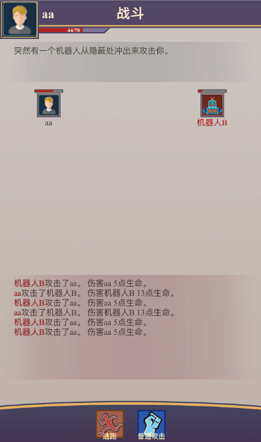

1. 系统简介¶
Muddery是一个用Python编写的在线文字游戏（如MUD）框架，所有的代码都是开源的，采用BSD许可证发布。
1.1. 特点¶
Muddery具有以下特点：
使用Python开发，可以跨平台使用，只需要花几分钟时间就能够安装它。
支持多人在线游戏，游戏内容主要以文字形式展现，但也可以扩展加入多媒体的内容。
内建有基本的任务系统、事件系统、对话系统等，便于游戏的创建。
自带有网页版的游戏编辑器，可以在网页上构建游戏世界。
自带网页客户端，可以轻松地发布游戏。
完全使用点击式的游戏操作模式，便于在智能手机、平板设备上使用。
1.2. 相关资源¶
- 我们网站：
- 程序源码：
1.3. 准备开始¶
如果你对 Muddery 感兴趣，想用它来创建自己的游戏，可以去看 安装启动 ，它会教你如何安装 Muddery 并创建游戏。
1.4. 系统演示¶
系统的演示可见这里 演示游戏
游戏截图如下：
